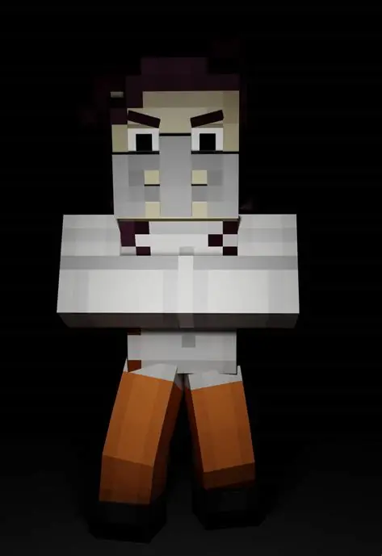

The Admins
The Admins are three god-like entities that created the world in Minecraft: Story Mode.The three Admins (Fred, Xara, and Romeo) used to spend most of their time in a cabin. Later, they all left the cabin and expanded upon the first world that existed, The Underneath, and they created their own villages, becoming well respected and praised among all the people. Romeo, still reminiscent of their past, built his town/arena Romeoburg around the cabin that they had lived in, however, Xara and Fred were all for starting anew, making their own towns Fred's Keep and The Oasis. After Romeo lost himself trying to keep the group together, he is said to have bedrocked over the Underneath and created the Overworld.As an admin, one is given a unique set of incredible powers. Being that Romeo is the only active Admin in the series before losing his powers, we are given a look at what one can do with these set of powers, a few of which are usable in Minecraft itself, either by certain features in a server or commands.

Romeo
Romeo, or more commonly known as "The Admin", is the main antagonist of Minecraft: Story Mode Season Two. He is the most powerful and dangerous enemy that Jesse and the gang has ever come across, an "evil" powerful human who returned to the world when he heard that a new hero has risen and intending on challenging said hero for his own entertainment. However, at the end of the story, he eventually redeems himself for his past sins after losing his powers. Romeo is also Jesse's former overall archenemy.
Zara
Xara, also known as "Prisoner X", is a character in Minecraft: Story Mode, Season Two. She is a former Admin who was imprisoned by Romeo, She first appears in "Jailhouse Block" and is voiced by April Stewart.Xara has purple hair, pale skin, and dark brown eyes. She is first seen wearing a mask and straitjacket with a prisoner's outfit underneath. After escaping, she wears an orange prisoner jumpsuit.Xara is vengeful, paranoid, and somewhat emotional at times. She often expresses hatred towards her enemies due to the fact that she was betrayed by Romeo many years ago. Since then, she has not fully regained her trust of people and has had to guard her heart and emotions. After Romeo bedrocked over The Underneath and killed Fred, she wanted nothing more than to make him pay for what he had done. Her hatred grew over time when she was in the Sunshine Institute, and her quest for vengeance ultimately led to her death (if you do not give her, her bed)

Fred
Fred is a deceased character in Minecraft: Story Mode, Season Two and an overarching protagonist. He was also an Admin, as mentioned by Xara, and knew the key to defeating Romeo, the Golden Gauntlet. He is voiced by Fred Tatasciore. Fred's hologram record and journal show that he cared deeply about his friends. Unlike Xara, Fred believed that Romeo could be redeemed. Despite knowing he could be killed at any time, Fred had hope for Romeo. He also had no intentions to conquer other worlds, unlike Romeo. He was also mentioned to be kindhearted.